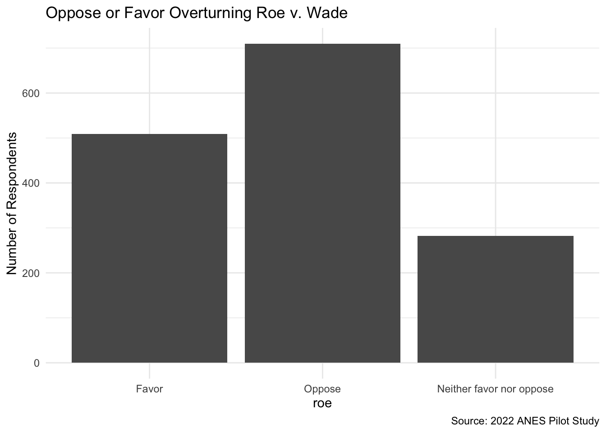
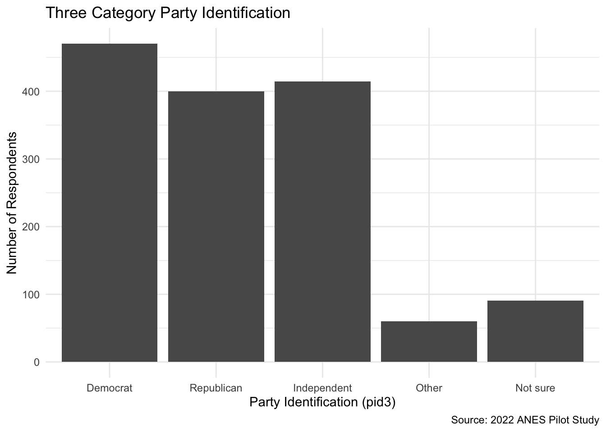
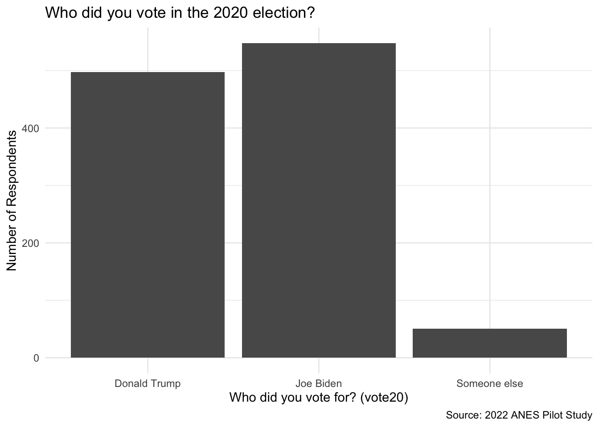

library(tidyverse)
library(haven)
library(hrbrthemes)
library(survey)
library(srvyr)
library(labelled)
library(sjmisc)
library(sjPlot)
library(gmodels)
library(gtsummary)
library(skimr)
library(ggblanket)SA 4: Single Variable EDA
Discussion
Load Packages
Load Your Dataset
Need help? Go to chapter x in the webbook.
load("anes_pilot_small.RData")Manage your data as needed
Need help? Go to chapter x in the webbook.
Graph 1
Need help? Go to chapter 4 in the webbook.
anes_pilot_small |>
as_factor() |>
drop_na(roe) |>
ggplot(aes(x = roe, weight = weight)) +
geom_bar() +
ggtitle("Oppose or Favor Overturning Roe v. Wade") +
labs(x = "roe", y = "Number of Respondents", caption = "Source: 2022 ANES Pilot Study") +
theme_minimal()
Graph 2
Need help? Go to chapter 4 in the webbook.
anes_pilot_small |>
as_factor() |>
drop_na(pid3) |>
ggplot(aes(x = pid3, weight = weight)) +
geom_bar() +
ggtitle("Three Category Party Identification") +
labs(x = "Party Identification (pid3)", y = "Number of Respondents", caption = "Source: 2022 ANES Pilot Study") +
theme_minimal()
Graph 3 (add more if you want to!)
Need help? Go to chapter 4 in the webbook.
anes_pilot_small |>
as_factor() |>
drop_na(vote20) |>
ggplot(aes(x = vote20, weight = weight)) +
geom_bar() +
ggtitle("Who did you vote in the 2020 election?") +
labs(x = "Who did you vote for? (vote20)", y = "Number of Respondents", caption = "Source: 2022 ANES Pilot Study") +
theme_minimal()
Run Univariate Statistics
Need help? Go to chapter 4 in the webbook.
anes_pilot_small |>
as_factor() |>
tbl_summary()
anes_pilot_small |>
as_factor() |>
skim() |>
yank("numeric")| Characteristic | N = 1,5851 |
|---|---|
| Case ID | 793 (397, 1,189) |
| Analysis weight | 0.89 (0.65, 1.18) |
| Unknown | 85 |
| How would you rate people who forced their way into the U.S. Capitol on January 6, 2021? | 15 (1, 50) |
| Unknown | 2 |
| How would you rate the U.S. Supreme Court? | 51 (30, 74) |
| Compared to 2020, would you say the U.S. economy is much better, somewhat better, about the same, somewhat worse, or much worse? | |
| Much better | 108 (6.8%) |
| Somewhat better | 231 (15%) |
| About the same | 273 (17%) |
| Somewhat worse | 346 (22%) |
| Much worse | 627 (40%) |
| Profile: Party Identification | |
| Strong Democrat | 349 (23%) |
| Not very strong Democrat | 156 (10%) |
| Lean Democrat | 126 (8.3%) |
| Independent | 245 (16%) |
| Lean Republican | 150 (9.9%) |
| Not very strong Republican | 150 (9.9%) |
| Strong Republican | 281 (18%) |
| Not sure | 62 (4.1%) |
| Unknown | 66 |
| Profile: 3 point Party ID | |
| Democrat | 508 (33%) |
| Republican | 430 (28%) |
| Independent | 428 (28%) |
| Other | 66 (4.3%) |
| Not sure | 90 (5.9%) |
| Unknown | 63 |
| Profile: Ideology | |
| Very liberal | 171 (11%) |
| Liberal | 253 (16%) |
| Moderate | 486 (31%) |
| Conservative | 342 (22%) |
| Very conservative | 198 (13%) |
| Not sure | 134 (8.5%) |
| Unknown | 1 |
| Vote 2020 - Trump/Biden/Someone else | |
| Donald Trump | 541 (45%) |
| Joe Biden | 618 (51%) |
| Someone else | 47 (3.9%) |
| Unknown | 379 |
| Follow what’s going on in government and public affairs | |
| Most of the time | 773 (49%) |
| Some of the time | 460 (29%) |
| Only now and then | 217 (14%) |
| Hardly at all | 135 (8.5%) |
| Are you registered to vote, or not | |
| Yes, registered to vote at my current address | 1,319 (83%) |
| Yes, registered to vote at a different address | 70 (4.4%) |
| No, not registered | 196 (12%) |
| Done the following things in the past 12 months -- Attended a meeting to talk about political or social concern? | |
| Have done this in past 12 months | 204 (13%) |
| Have not done this in the past 12 months | 1,377 (87%) |
| Unknown | 4 |
| Done the following things in the past 12 months -- Given money to any candidate running for public office, any political party, or any other group that supported or opposed candidates? | |
| Have done this in past 12 months | 289 (18%) |
| Have not done this in the past 12 months | 1,289 (82%) |
| Unknown | 7 |
| How important are each of the following issues in the country today? - Voting rights | |
| Extremely important | 600 (38%) |
| Very important | 364 (23%) |
| Moderately important | 321 (20%) |
| Slightly important | 177 (11%) |
| Not at all important | 122 (7.7%) |
| Unknown | 1 |
| Favor/oppose - overturn Roe v. Wade | |
| Favor | 526 (33%) |
| Oppose | 764 (48%) |
| Neither favor nor oppose | 295 (19%) |
| Profile: Gender | |
| Male | 707 (45%) |
| Female | 878 (55%) |
| Profile: Education | |
| No HS | 75 (4.7%) |
| High school graduate | 445 (28%) |
| Some college | 357 (23%) |
| 2-year | 155 (9.8%) |
| 4-year | 363 (23%) |
| Post-grad | 190 (12%) |
| Profile: Family income | |
| Less than $10,000 | 112 (7.1%) |
| $10,000 - $19,999 | 120 (7.6%) |
| $20,000 - $29,999 | 157 (9.9%) |
| $30,000 - $39,999 | 124 (7.8%) |
| $40,000 - $49,999 | 107 (6.8%) |
| $50,000 - $59,999 | 121 (7.6%) |
| $60,000 - $69,999 | 108 (6.8%) |
| $70,000 - $79,999 | 119 (7.5%) |
| $80,000 - $99,999 | 123 (7.8%) |
| $100,000 - $119,999 | 81 (5.1%) |
| $120,000 - $149,999 | 75 (4.7%) |
| $150,000 - $199,999 | 82 (5.2%) |
| $200,000 - $249,999 | 37 (2.3%) |
| $250,000 - $349,999 | 27 (1.7%) |
| $350,000 - $499,999 | 10 (0.6%) |
| $500,000 or more | 7 (0.4%) |
| Prefer not to say | 175 (11%) |
| Profile: Importance of religion (Pew version) | |
| Very important | 580 (37%) |
| Somewhat important | 416 (26%) |
| Not too important | 222 (14%) |
| Not at all important | 367 (23%) |
| Profile: Political Interest | |
| Most of the time | 723 (46%) |
| Some of the time | 429 (27%) |
| Only now and then | 219 (14%) |
| Hardly at all | 152 (9.6%) |
| Don't know | 60 (3.8%) |
| Unknown | 2 |
| Profile: Urban-rural status | |
| Big city | 317 (20%) |
| Smaller city | 244 (15%) |
| Suburban area | 549 (35%) |
| Small town | 201 (13%) |
| Rural area | 274 (17%) |
| 1 Median (IQR); n (%) | |
Variable type: numeric
| skim_variable | n_missing | complete_rate | mean | sd | p0 | p25 | p50 | p75 | p100 | hist |
|---|---|---|---|---|---|---|---|---|---|---|
| caseid | 0 | 1.00 | 793.00 | 457.69 | 1.0 | 397.00 | 793.00 | 1189.00 | 1585.00 | ▇▇▇▇▇ |
| weight | 85 | 0.95 | 1.00 | 0.51 | 0.3 | 0.65 | 0.89 | 1.18 | 4.49 | ▇▃▁▁▁ |
| jan6therm | 2 | 1.00 | 27.50 | 29.46 | 0.0 | 1.00 | 15.00 | 50.00 | 100.00 | ▇▂▃▁▁ |
| ftscotus | 0 | 1.00 | 50.44 | 29.05 | 0.0 | 30.00 | 51.00 | 74.00 | 100.00 | ▆▅▇▆▆ |
Save your updated dataset?
Need help? Go to chapter 4 in the webbook.